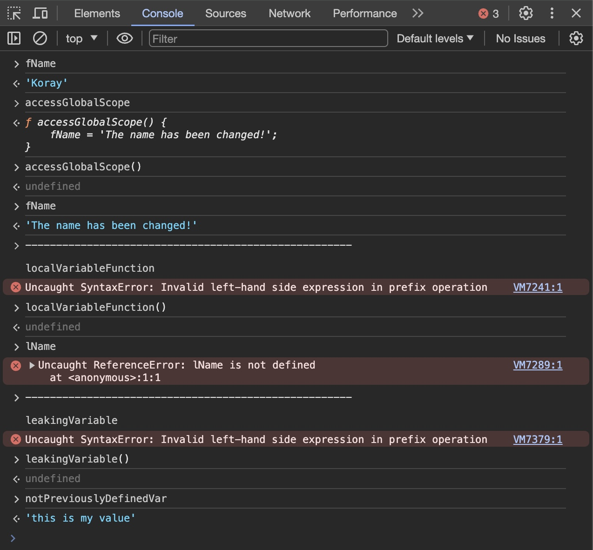

All the code in the body of the function is NOT executed, until we "call" the function.
Variables = Noun
Functions = Verb
You can log this function on the console: getPercentage(25,100) =
You can log this function on the console: multiplyNumbers(2,100) =
JavaScript Scopes
Function Scope: That variable exists inside of the function scope.
Global Scope: The variable accessible within in our JavaScript code.
Leaking Variable: If you create a variable without using a var statement or another words within the function, JavaScript runtime will take care of declaring the variable for you and then assignment will be executed.

JavaScript Objects
An Object is a container of properties.
An Objects can also contain Function.
Using "this."
If you are inside of a object and function within an object "this." always point where the function has been defined.
Function used to build ("construct") an object
As a userable blueprint for creating more than one instance of the same object.
How do we create an object with using the function, when you use this way is called the CONSTRUCTOR FUNCTION of the object.
Object creation using the "new" operator on the function call.
All the values of below, they have been created same function constructor.
let myNewCar = new Car(4, "Toyota");
let myOldCar = new Car(5, "Nissan");
let luxuryCar = new Car(5, "Mercedes");
let ludicrousCar = new Car(2, "Ferrari");
let batmanCar = new Car(0, "Murcielago");
In JavaScript, Functions are first class objects. They are not only running code, but also they are object, they contain properties.
(Car.prototype)
You can use this function on the console: calculate(firstNum, secondNum, operation{})
for the calculator.
Obviously with these functions: "add", "subtraction", "divide", "multiply" instead of 'operation(third parameter)'